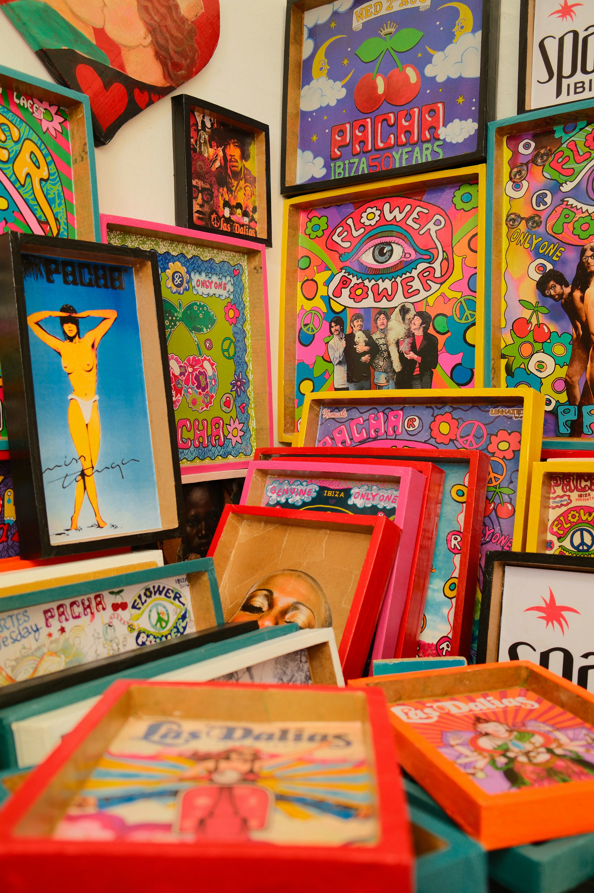
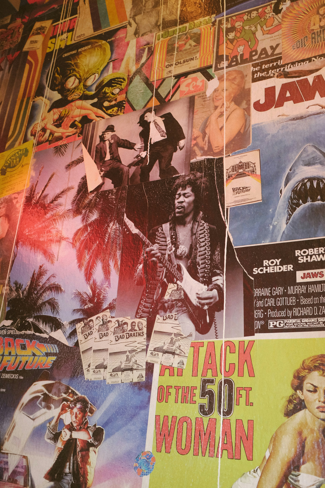
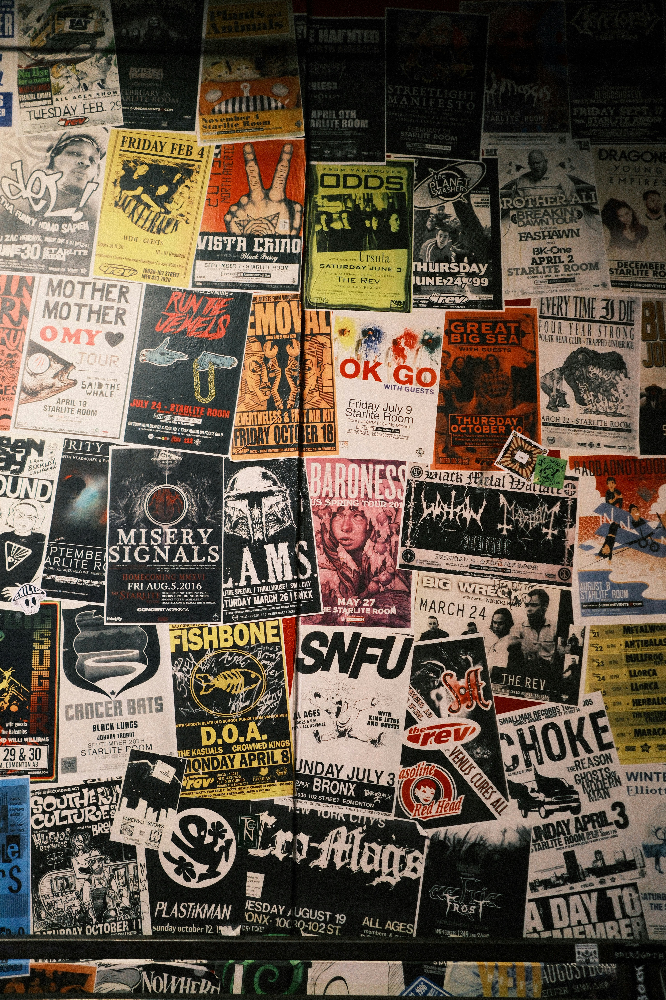
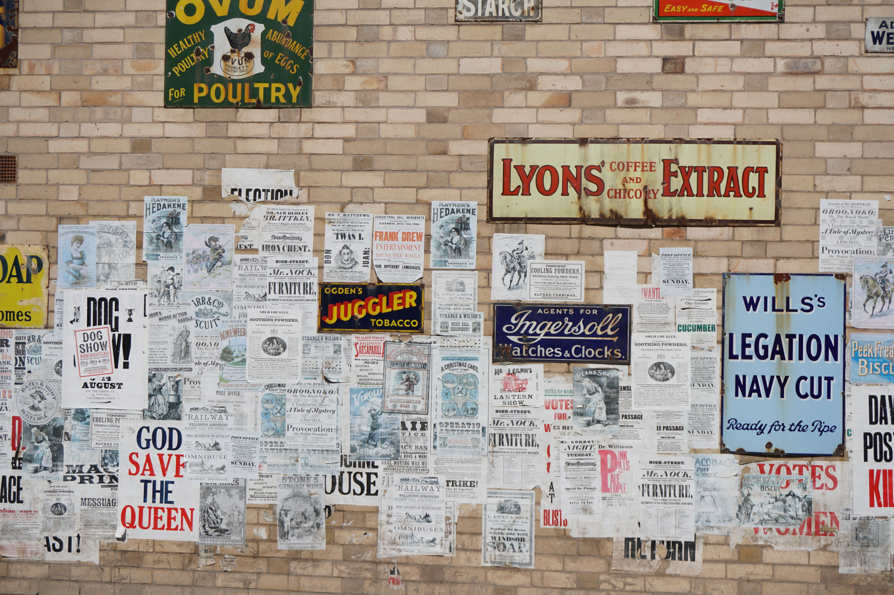
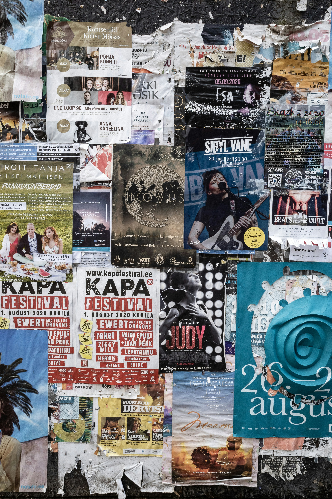
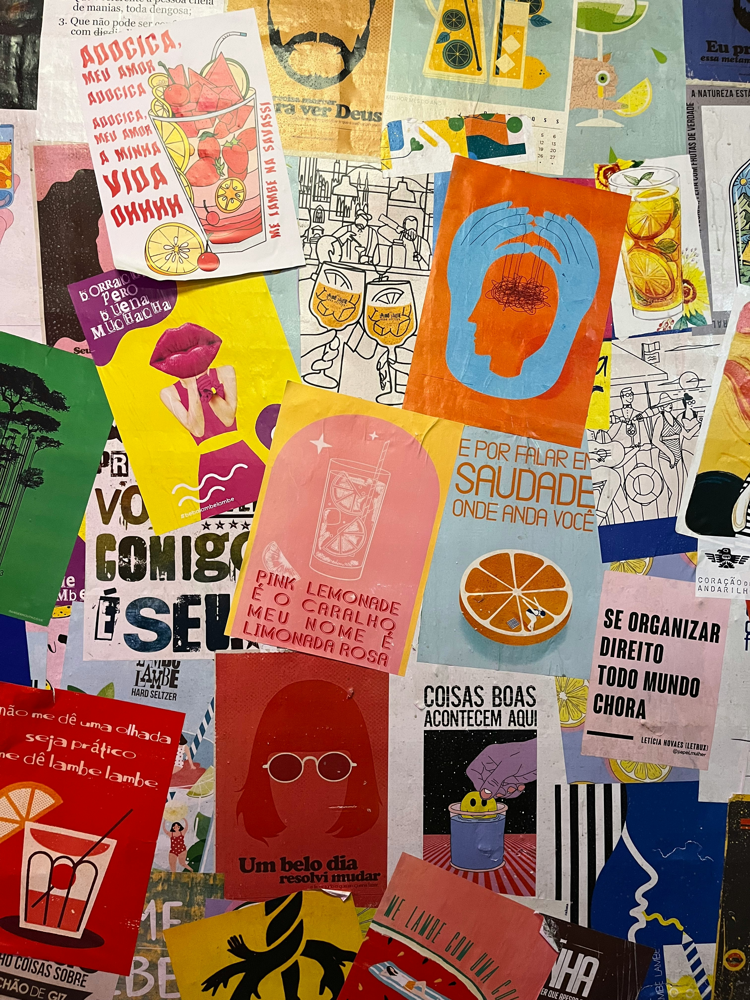

Mijn website gaat over hoe de "retro" stijl als een grote trend terug
aan het komen is binnen interieur, posters, kleur en typografie. Je zag
afgelopen 10 jaar dat bijvoorbeeld binnen het interieur vooral beige en
hout helemaal in was. Nu wordt er steeds meer gebruik gemaakt van de
"retro" meubels en ontwerpen, ik ben benieuwd hoe dit komt en wil dit
graag onderzoeken en zo goed mogelijk visueel weergeven door middel van
deze website.
70s

Rond de 70s was het gebruikelijk om heel veel en uitgesproken kleuren
te gebruiken zoals duidelijk zichtbaar is in de pop-art stijl. Het was
ook gebruikelijk om veel te tekenen en het lettertypegerbuik was heel
expressief.
80s
In de 80s werd er nog steeds veel getekend, de kleuren zijn iets
minder expressief als dat ze 10 jaar hiervoor waren maar nog steeds is
er veel kleurgebruik in de posters.
90s

In de 90s wordt er nog steeds veel met de hand getekend maar ook
fotografie is populair aan het worden. Het is een soort overgangsfase
waarin je beide stijlen veel ziet, de getekende posters bevatten in
deze tijd vaak 2 fellen kleuren die een hoog contrast hebben.
00s

In de 00s is het gebruikelijk om 2 kleuren te gebruiken in een poster,
vaak alleen primaire en/of secundaire kleuren. Ook veel wit als
letters of juist als hoofdkleur/ achtergrondkleur is gebruikelijk.
10s

In de 10s wordt er heel weinig gebruik gemaakt van kleuren, veel
alleen zwart en wit en soms misschien een kleur erbij. Naar mijn
mening is dit wel het saaiste tijdperk voor wat populair is in het
maken van posters.
20s

In de 20s is het gebruik van foto's in posters heel normaal, het
overgrote deel van veel posters is gewoon een foto en dit zorgt er
gelukkig weer voor dat de kleuren iets meer terugkomen. Bij de posters
waar geen foto's gebruikt worden is de typografie erg belangrijk, er
is bij die posters weinig visueels te zien.
nu

Nu valt het heel erg op dat zelf tekenen weer populair aan het worden
is, veel expressief kleurgebruik is weer gebruikelijk. Ik herken op
deze aspecten dus ook een "retro" stijl weer terug en dit vind ik
interessant om te zien.